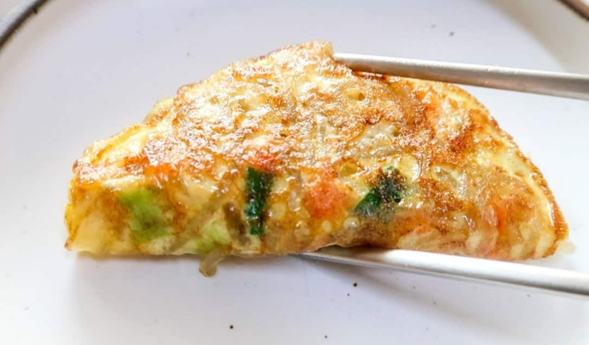

DalGyal ManDu
Home
Mandu is a general term for Korean dumplings that consist of a savory filling wrapped in thin wrappers . I’ve been making some variation of this Korean dumpling recipe for decades. They are so delicious and versatile!

Ingredients
1 package dumpling skins/wrappers
8 ounces zucchini
10 ounces green cabbage
4 ounces fresh mushrooms
1/2 medium onion finely chopped
2 scallions finely chopped
1/2 pound ground pork
1/4 pound ground beef
1 tbsp minced garlic
1 to 2 tsp finely minced ginger
1 tbsp soy sauce
1 tbsp sesame oil
1 egg
1/4 tsp salt
⅛ teaspoon pepper
1 tablespoon soy sauce
1 teaspoon vinegar
1 tablespoon water
1/2 teaspoon sugar
pinch of black pepper
pinch of red pepper flakes gochugaru
Nutrition Facts
Calories 761.3
Total Fat 2.0g
Cholesterol 0mg
Sodium 20mg
Total Carbohydrate 84.7g
Vitamin C 24%
vitamin A 32%
Procedure
Finely chop zucchini and cabbage.
In two separate bowls, generously sprinkle salt over the chopped zucchini and cabbage and set aside (for at least 15 minutes) while preparing other ingredients. (This process will draw out water, soften the texture, and add flavor.) Squeeze out as much water as possible from the salted zucchini and cabbage by hand. Transfer to a large mixing bowl.
Prepare all the remaining ingredients and add to the mixing bowl. Mix all ingredients well with your hand.
Place one heaping teaspoonful of the filling on a wrapper. Wet the edges of the wrapper with water and seal tightly (pushing the air out with your fingers) into a half-moon shape.
Repeat this process until all the filling/wrappers are used.
For Gun mandu (pan fried):
Heat the pan with 2 tablespoons of vegetable oil over medium high heat. Add the dumplings, making sure they aren’t touching each other.
Fry for 1 – 2 minutes, until the bottoms are golden brown. Add 1/3 cup of water to the pan, and cover immediately with a lid. Reduce the heat to medium low, and steam for 4 to 5 minutes. Or cook 2 - 3 minutes on each side over medium heat until golden brown without adding water.
If the dumplings are frozen, cook a little longer.
For Tuigin mandu (deep-fried dumplings):
Heat a deep fryer or skillet with about 2-3 inches of canola or vegetable oil over medium-high heat to 350°F. Fry the dumplings for 2-3 minutes until golden brown.
For Jjin mandu (steamed):
Steam the dumplings for about 10 minutes in a steamer (12 minutes if frozen).
Make sure to line the steamer with a wet cheesecloth or cabbage leaves to prevent the mandu from sticking.
For Mul mandu (boiled):
Bring a pot of water to a boil. Add mandu (stirring gently so they don’t stick to the bottom of the pot) a few at a time, and cook until all of them come up to the surface. Continue to cook for another minute or two.
Serve them Hot and enjoy the tasty Breakfast...!
Expert Guide
Back ←
Scroll to Top ↑